雁塔晨钟(黑先胜）
首页
茗弈阁
#1 雁塔晨钟(黑先胜） 作者：茗弈宽容 发表时间：2010-4-9 11:59:29
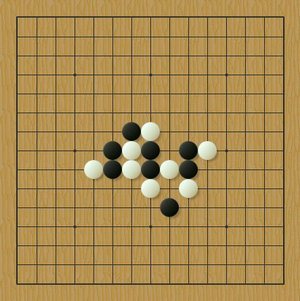
转自杰出连珠
#2 Re:雁塔晨钟(黑先胜） 作者：wsmwy 发表时间：2010-4-9 17:17:00
这不松三吗，杀不来
#3 Re:雁塔晨钟(黑先胜） 作者：茗弈宽容 发表时间：2010-4-9 19:19:12
杀出来奖励威望！
#4 Re:雁塔晨钟(黑先胜） 作者：飞哥 发表时间：2010-4-9 21:08:06
=======上图对应的爱五子棋谱代码如下，以便你拆解：========
h8h9h7h6j7g7g9j6i5i7j8k8f8g8f7e7
======================================================
=======上图对应的爱五子棋谱代码如下，以便你拆解：========
h8h9h7h6j7g7g9j6i5i7j8k8f8g8f7e7f5f6g6e4e8h5d8
======================================================
=======上图对应的爱五子棋谱代码如下，以便你拆解：========
h8h9h7h6j7g7g9j6i5i7j8k8f8g8f7e7f5f6g6i8e8h5f10
======================================================
=======上图对应的爱五子棋谱代码如下，以便你拆解：========
h8h9h7h6j7g7g9j6i5i7j8k8f8g8f7e7f5f9g6e4e8h5i10h10g12
======================================================
=======上图对应的爱五子棋谱代码如下，以便你拆解：========
h8h9h7h6j7g7g9j6i5i7j8k8f8g8f7e7f5f4g6e4g5h5h10
======================================================另外这个17也可以
=======上图对应的爱五子棋谱代码如下，以便你拆解：========
h8h9h7h6j7g7g9j6i5i7j8k8f8g8f7e7i11
======================================================［ 五子痴 于 2010-4-9 21:48:42 时奖励此帖[金币加 20 威望加1］
#5 Re:雁塔晨钟(黑先胜） 作者：菜包先生 发表时间：2010-4-10 1:32:54
23走F10白必胜？23走D8的，24走F4黑也没胜啊？我的黑石崩溃了所？ ［此帖子已被 菜包先生 在 2010-4-10 2:10:34 编辑过］
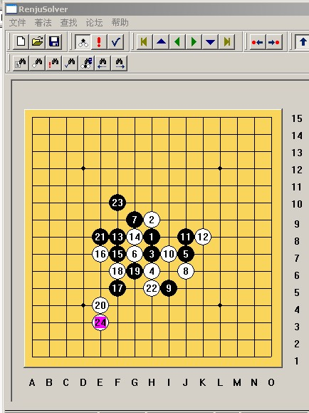
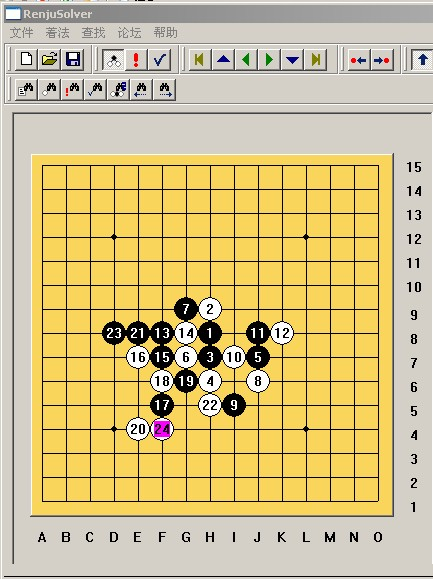
［此帖子已被 菜包先生 在 2010-4-10 2:11:42 编辑过］
［此帖子已被 有志青年 在 2010-4-10 5:38:53 编辑过］
#6 Re:雁塔晨钟(黑先胜） 作者：菜包先生 发表时间：2010-4-10 1:38:56
0
不知道有没有漏掉强防［此帖子已被 菜包先生 在 2010-4-10 2:07:56 编辑过］
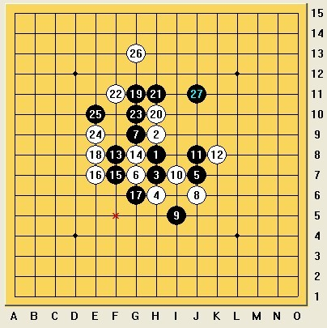
意思都差不多，
［此帖子已被 菜包先生 在 2010-4-10 2:54:02 编辑过］
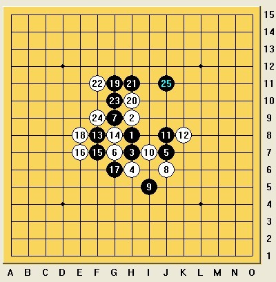
反向不难
［此帖子已被 菜包先生 在 2010-4-10 2:56:57 编辑过］
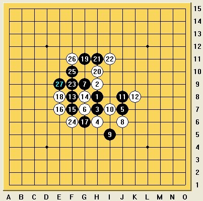
这样还原了
［此帖子已被 菜包先生 在 2010-4-10 2:58:45 编辑过］
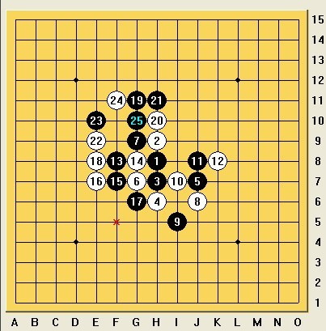［此帖子已被 菜包先生 在 2010-4-10 3:05:51 编辑过］
#7 Re:雁塔晨钟(黑先胜） 作者：菜包先生 发表时间：2010-4-10 3:08:51
这样也不行
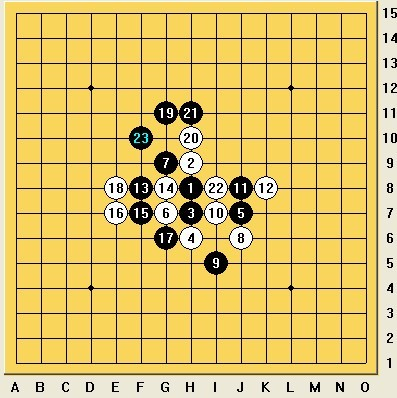
这样也杀了
［此帖子已被 菜包先生 在 2010-4-10 3:09:08 编辑过］
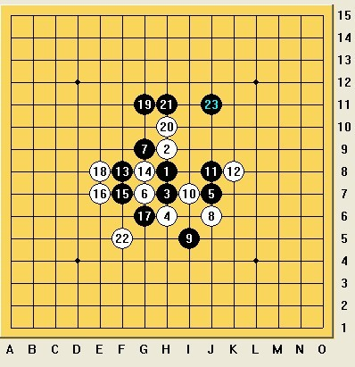［此帖子已被 菜包先生 在 2010-4-10 3:10:51 编辑过］
#8 Re:雁塔晨钟(黑先胜） 作者：菜包先生 发表时间：2010-4-10 3:13:45
地毯了？
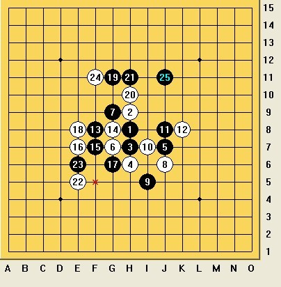［此帖子已被 菜包先生 在 2010-4-10 3:14:08 编辑过］
#9 Re:雁塔晨钟(黑先胜） 作者：菜包先生 发表时间：2010-4-10 3:15:45
最后一个强防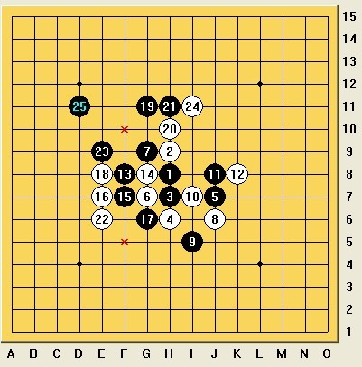
地毯了
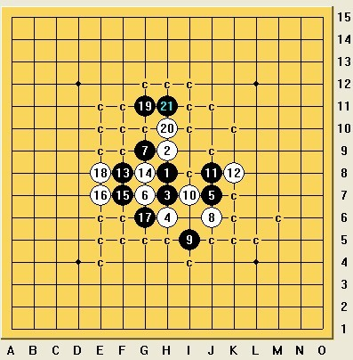［此帖子已被 菜包先生 在 2010-4-10 3:22:09 编辑过］
［ 有志青年 于 2010-4-10 5:39:23 时奖励此帖[金币加 20 威望加1］
#10 Re:雁塔晨钟(黑先胜） 作者：菜包先生 发表时间：2010-4-10 3:23:10
太阳。。。。
3：22了，18和20还有没有强防明天再看了。。。
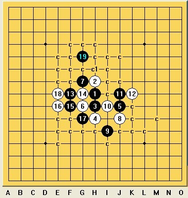［此帖子已被 菜包先生 在 2010-4-10 3:26:53 编辑过］
［ 有志青年 于 2010-4-10 5:39:20 时奖励此帖[金币加 20 威望加1］
#11 Re:雁塔晨钟(黑先胜） 作者：菜包先生 发表时间：2010-4-10 3:33:04
好无聊。。。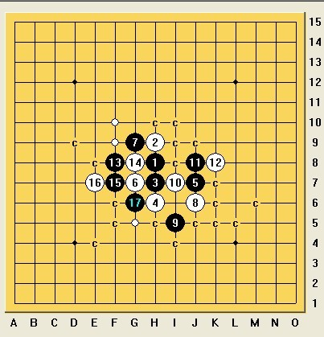［此帖子已被 菜包先生 在 2010-4-10 3:33:51 编辑过］
［ 有志青年 于 2010-4-10 5:39:32 时奖励此帖[金币加 20 威望加1］
#12 Re:雁塔晨钟(黑先胜） 作者：茗弈宽容 发表时间：2010-4-10 11:43:33
 菜包弟弟精神可嘉！值得学习！
菜包弟弟精神可嘉！值得学习！
#13 Re:Re:雁塔晨钟(黑先胜） 作者：茗弈宽容 发表时间：2010-4-10 11:50:59
引用：
原文由 菜包先生 发表于 2010-4-10 3:33:04 :
好无聊。。。［此帖子已被 菜包先生 在 2010-4-10 3:33:51 编辑过］
［ 有志青年 于 2010-4-10 5:39:32 时奖励此帖[金币加 20 威望加1］
这个谱可以发一下共享不？
#14 Re:雁塔晨钟(黑先胜） 作者：岑小鱼 发表时间：2010-4-10 13:08:25
分支蛮多的 包子发个馅饼啊
#15 Re:雁塔晨钟(黑先胜） 作者：菜包先生 发表时间：2010-4-10 13:31:27
这个18好像解决了，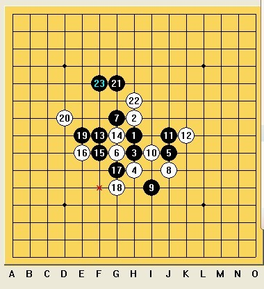
另外，上面的图都摆到了黑石杀得出啊，我没整理这个拆得乱七八糟的谱，你们自己用黑石拆一下就成了所
［此帖子已被 菜包先生 在 2010-4-10 13:32:52 编辑过］
［此帖子已被 菜包先生 在 2010-4-10 13:34:55 编辑过］
#16 Re:雁塔晨钟(黑先胜） 作者：菜包先生 发表时间：2010-4-10 13:46:29
这2个18也解决了
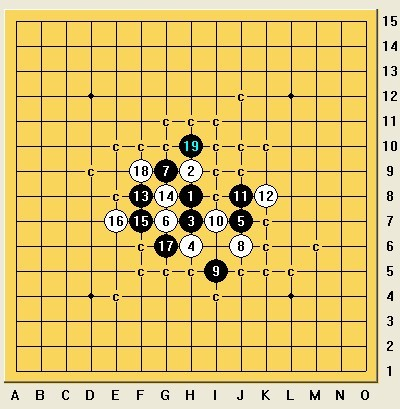
一样杀
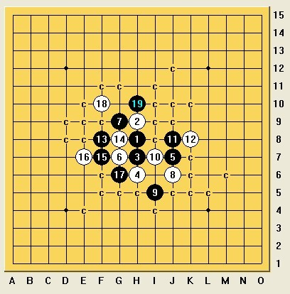［此帖子已被 菜包先生 在 2010-4-10 13:48:26 编辑过］
#17 Re:雁塔晨钟(黑先胜） 作者：江南新绿 发表时间：2010-4-10 16:03:20
=======上图对应的爱五子棋谱代码如下，以便你拆解：========
h8h9h7h6j7g7g9j6i5i7j8k8f8g8f7e7g6g5e8d9g11f6d8e3f4e5
======================================================这个怎么杀的
#18 Re:雁塔晨钟(黑先胜） 作者：苯酚 发表时间：2010-4-10 16:56:05
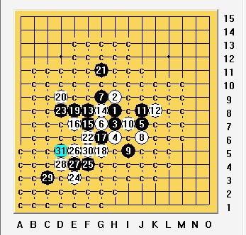
#19 Re:雁塔晨钟(黑先胜） 作者：江南新绿 发表时间：2010-4-10 17:12:00
楼上的mm发个地毯来看看，21左下那个点怎么杀的。
#20 Re:雁塔晨钟(黑先胜） 作者：苯酚 发表时间：2010-4-10 17:31:02
 一败18.rar
一败18.rar ［ 江南新绿 于 2010-4-10 19:53:37 时花20金币送鲜花一朵］
#21 Re:雁塔晨钟(黑先胜） 作者：江南新绿 发表时间：2010-4-10 19:53:17
谢谢楼上的mm，送上鲜花一朵。下图简单vct。不难。
=======上图对应的爱五子棋谱代码如下，以便你拆解：========
h8h9h7h6j7g7g9j6i5i7j8k8f8g8f7e7g6g5e8d9g11h10f10f11h12i13d8e9f9f6g10h11f5
======================================================
#22 Re:Re:雁塔晨钟(黑先胜） 作者：飞哥 发表时间：2010-4-11 0:47:50
引用：
原文由 菜包先生 发表于 2010-4-10 1:32:54 :
23走F10白必胜？23走D8的，24走F4黑也没胜啊？我的黑石崩溃了所？ ［此帖子已被 菜包先生 在 2010-4-10 2:10:34 编辑过］
［此帖子已被 菜包先生 在 2010-4-10 2:11:42 编辑过］
［此帖子已被 有志青年 在 2010-4-10 5:38:53 编辑过］
23怎么能走F10？ D8,F4,G4后就简单胜了啊，地毯的话也没什么交换。。。24走H4的话还稍微强一点点
附：第二图地毯（看文件大小就知道多简单吧)
第二图.rar［此帖子已被 飞哥 在 2010-4-11 0:50:53 编辑过］
#23 Re:雁塔晨钟(黑先胜） 作者：菜包先生 发表时间：2010-4-11 0:53:58
你自己23是走的F10好吧？
#24 Re:雁塔晨钟(黑先胜） 作者：飞哥 发表时间：2010-4-11 0:55:28
这个题胜发看来至少有三种
#25 Re:雁塔晨钟(黑先胜） 作者：飞哥 发表时间：2010-4-11 0:56:04
伙计，你没把图看清楚
#26 Re:雁塔晨钟(黑先胜） 作者：雅匪 发表时间：2010-4-11 15:55:35
看到以长安八景之一命名的题 狠亲切 狠自豪